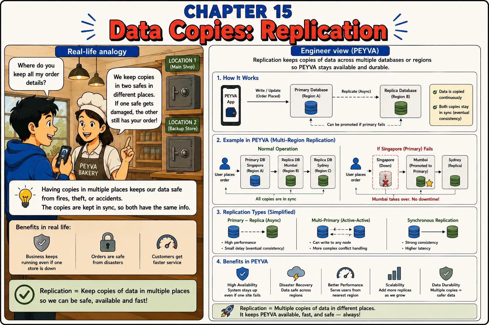

Chapter 15
Data Copies: Replication
Having copies in multiple places keeps our data safe from fires, theft, or accidents. The copy follows the original a moment later.

1. Intuition
- The Vault is a single file on a single machine. If that disk fails, every balance is gone.
- A bakery that keeps order records in two safes, in two locations, survives a fire in either one.
- Replication keeps copies of peyva's database in more than one place, so no single failure erases Alice's balance.
2. Concepts
- Primary Database. The database that accepts writes and is the source of truth.
- Replica. A copy of the primary's data, kept in sync, usually in a different location.
- Async Replication. The replica catches up shortly after the primary writes: fast, but the replica can be briefly behind.
- Promotion. Turning a replica into the new primary when the original primary fails.
3. Under the Hood
- Write/Update (Order Placed) -> Primary Database (Region A) --replicate (async)--> Replica Database (Region B). The replica can be promoted if the primary fails.
- Normal operation: the replica trails the primary by a moment. If the primary region fails: a replica is promoted, and whatever the primary had not sent yet is gone.
4. Build It Hands-on Building in Go, change in Chapter 0
- The Vault learns to keep a spare copy in another place.
Analogical Prompting. Have the assistant generate its own analogy and reason through it before building. You learn more comparing its analogy to yours than from imposing yours: where the two differ is where one of you is wrong about the design.
Documented in The Prompt Report: Thought Generation, Analogical Prompting
Build this in Go, standard library only.
Continue the codebase from earlier chapters.
Code in peyva/<component>/, one folder per component.
Money: exact decimal or integer minor units, never floating point, two decimal places.
The goal and invariants are in peyva/goal.md.
The Vault keeps everything in one file on one disk. If that disk dies, every balance dies with it.
Before designing anything, give me a real-world analogy for keeping a second copy of records somewhere else, something with no computers in it. Say who writes first, who copies, how far behind the copy runs, and what happens when the original is destroyed. Then name the one part of your analogy that actually matters for this design.
Now build it. The Vault gets a second copy, written to after each committed payment, and a way to promote it when the primary is unreachable. Keep the copying asynchronous. The caller must never wait for it.
Then tell me where your analogy breaks down for real databases, and whether it led you into any mistake in the code you just wrote.
Done when a payment appears in both copies, balance enquiries survive the primary being unavailable, and you can show me the window where a committed payment hasn't reached the second copy yet.
5. Break It Test it
- Simulate a primary failure and confirm the replica can take over.
- Make a transfer and confirm both of the Vault's copies reflect the new balance.
- 'Fail' the primary (rename or lock its file) and confirm enquiries still succeed against the second copy.
- A transfer committed a split second before the failure might not have reached the replica yet. Try to catch that gap.
Quick tip: Async replication means the replica can be briefly behind. That gap is where Chapter 16's tradeoffs live.